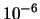

Next: Bugs
Up: cdd/cdd+ Reference Manual
Previous: Source Files and Compilation
Some Useful Tips for Usage
The computation is done by floating point arithmetic by both cdd and cddf+,
and by exact rational arithmetic by cddr+.
Since cddr+ runs much slower (at least for the moment),
use it when you need to make sure that the output is correct.
Clearly, there is no guarantee
that the programs cdd and cddf+ outputs the correct result.
However they seems to work correctly
for many different types of polyhedra if one
carefully prepares input data files. The followings
are some useful tips for input data preparation to
avoid badly behaving computations with cddf+.
- In cddf+, any real value is considered as zero if its absolute value is
less than . Since the computation is performed with double precision
arithmetic, the correctness of zero recognition depends greatly on how
accurate the input matrix is. For example, you should never use
for the value
 . Just use the correct value as it is.
Unlike many LP softwares, perturbation of data
can cause some serious problems. If you want to perturb your data (e.g. right
hand side) for some reason, do it with large enough constants, say of order
.
. Just use the correct value as it is.
Unlike many LP softwares, perturbation of data
can cause some serious problems. If you want to perturb your data (e.g. right
hand side) for some reason, do it with large enough constants, say of order
.
- If your matrix contains some irrational number, say
, please use an approximation which is correct in at least ten digits,
i.e. . See the sample input file reg600-5.ine in the ine subdirectory.
- For the same arithmetic reason, please try to scale your input matrix
as even as possible by multiplying appropriate constants to some rows and
columns . The program cdd does not perform any scaling before
computation.
Next: Bugs
Up: cdd/cdd+ Reference Manual
Previous: Source Files and Compilation
Komei Fukuda
2005-08-18